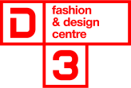

<!DOCTYPE html>
<html>

  <head>
      <meta charset="utf-8">
      <meta http-equiv="X-UA-Compatible" content="IE=edge">
      <meta name="viewport" content="width=device-width, initial-scale=1">
      <title>Table</title>
      <link rel='stylesheet' href='css/libs.css'>
      <link rel='stylesheet' href='css/style.css'>
  </head>

  <body>

  <header class="header">
      <div class="header__burger"><div class="burger"></div></div>
  </header>

    <main>
      <div class="slider-wrapper">

        <div class="logo"><a href="#"></a></div>


        <div class="cycle-slider js-cycle-slider">

          <div class="cycle-slide">
            <div class="logo-border"><div class="logo-border-inner"></div></div>
            <div class="cycle-slide__content">
              <div class="cycle-slide__content__inner">
                <div class="cycle-slide__content__head">
                  <div><h2 class="tlt" data-in-effect="fadeInDown" data-in-shuffle="false">Центр моды и дизайна D3</h2></div>
                  <div class="cycle-slide__content__head__title">Торжественная церемония открытия</div>
                  <div class="cycle-slide__content__head__date">Ноябрь 2017</div>
                </div>
                <div class="cycle-slide__content__description">
                  <p>Центр моды и дизайна «Д3» — единственное на сегодняшний день многофункциональное арт-пространство Москвы, объединяющее на одной площадке научные, культурные, информационные и другие проекты, дизайн-студии, бюрои производства так или иначе исследующие тему русского стиля: от истоков в народной культуре до современных трендов.</p>

                  <p>Инициируя совместные, междисциплинарные проекты, новый Центр поможет сформировать системный, структурированный взгляд на историю моды и дизайна в России и на состояние этих индустрий в современной России.</p>
                </div>
              </div>
            </div>
            <div class="cycle-slide__image" style="background-image: url('./images/design.jpg')"></div>
          </div>

          <div class="cycle-slide">
            <div class="logo-border"><div class="logo-border-inner"></div></div>
            <div class="cycle-slide__content">
              <div class="cycle-slide__content__inner">
                <div class="cycle-slide__content__head">
                  <div><h2 class="tlt" data-in-effect="fadeInDown" data-in-shuffle="false">Cистема дизайна в СССР</h2></div>
                  <div class="cycle-slide__content__head__title">Выставка</div>
                  <div class="cycle-slide__content__head__date">22 ноября 2017 — 14 января 2018</div>
                </div>

                <div class="cycle-slide__content__description">
                  <p>В экспозиции будут представлены предметы из собрания Всероссийского музея декоративно-прикладного и народного искусства, Московского музея дизайна,
                    информационных агентств «Россия сегодня» и ТАСС, частных коллекций.</p>
                  <p>Выставка расскажет, как была построена работа научно-исследовательских институтов,
                    специальных художественно-конструкторских бюро и дизайн-служб на заводах в Советском союзе.</p>
                  <p>Зрители познакомятся с преемственностью русской традиции и новаторством художественного проектирования советского периода.</p>
                </div>
              </div>
            </div>
            <div class="cycle-slide__image" style="background-image: url('./images/opening.jpg')"></div>
          </div>

        </div>
      </div>
      <div class="">Контакты</div>
    </main>

  

  <script src='js/libs.js'></script>
  <script src='js/scripts.js'></script>
  </body>
</html>